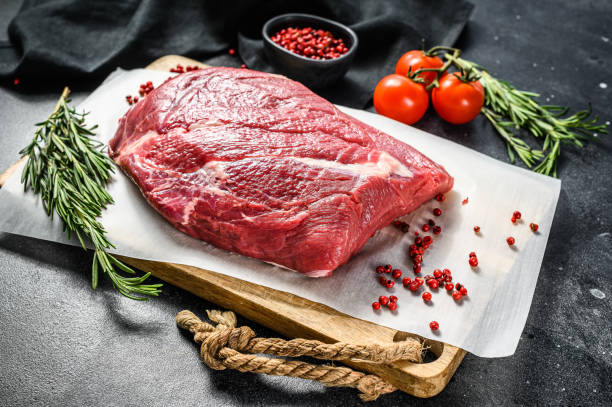
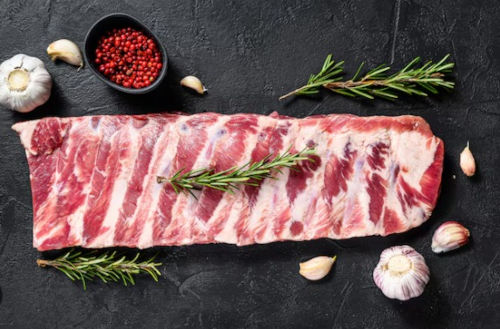
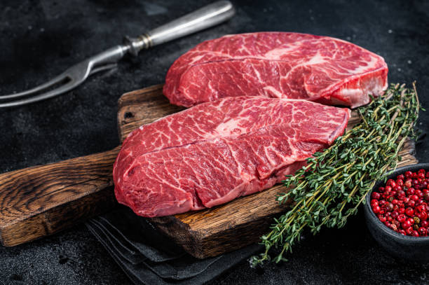
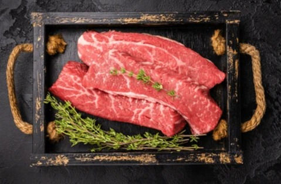
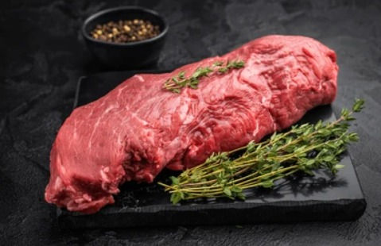
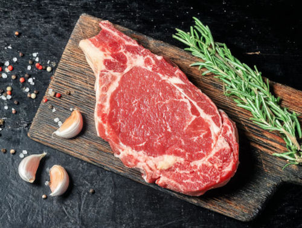
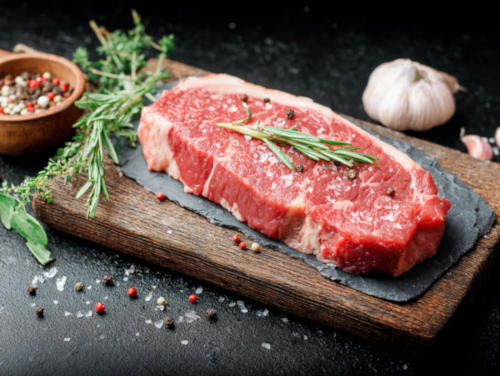
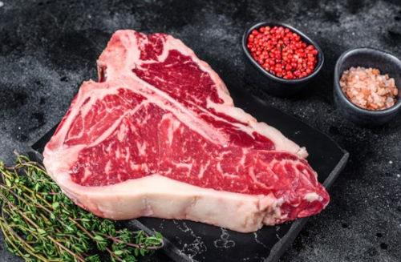
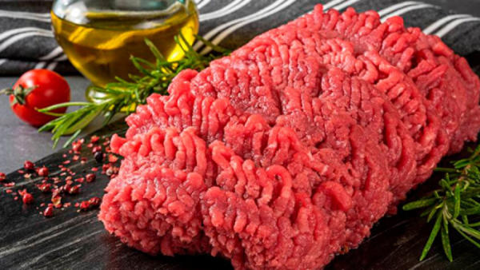

Brisket
Corte ideal para cocción lenta, muy utilizado en ahumados y barbacoas por su gran sabor y suavidad.
L. 140Trabajamos piezas de res pensadas para parrilla, cocina diaria, recetas especiales y pedidos comerciales.

Corte ideal para cocción lenta, muy utilizado en ahumados y barbacoas por su gran sabor y suavidad.
L. 140
Corte con excelente sabor, perfecto para horno, parrilla o preparaciones que resalten su jugosidad.
L. 130
Ideal para guisos y preparaciones caseras, ofrece buen rendimiento y sabor en cocciones prolongadas.
L. 110
Corte versátil utilizado en asados y guisos, reconocido por su textura y sabor intenso.
L. 105
Corte suave y jugoso, ideal para preparaciones rápidas en sartén o parrilla con excelente presentación.
L. 160
Corte premium con alto marmoleo que aporta jugosidad y sabor intenso en parrillas y asados.
L. 150
Corte equilibrado entre suavidad y sabor, ideal para parrilla, plancha o preparaciones especiales.
L. 145
Corte reconocido por su combinación de suavidad y sabor, excelente para asados y ocasiones especiales.
L. 155
Reconocida localmente por ser excelente para hamburguesas. Su suavidad, sabor y textura no tiene comparacion.
L. 130| Producto | Fortaleza | Ideal para | Disponibilidad |
|---|---|---|---|
| Ribeye | Jugosidad y suavidad | Parrilla premium | Según pedido |
| T-bone | Presencia y sabor | Asados especiales | Frecuente |
| Carne molida | Versatilidad | Recetas diarias | Diaria |
| Costilla de res | Gran sabor | Horno o parrilla | Según corte |
| Brisket | Sabor intenso y textura firme | Ahumados y cocción lenta | Según pedido |
| Espaldilla | Buen rendimiento | Guisos y cocción lenta | Frecuente |
| Falda | Sabor tradicional | Asados y guisos | Según pedido |
| Filete | Suavidad premium | Plancha y parrilla | Frecuente |
| Sirloin | Equilibrio de sabor | Parrilla y plancha | Frecuente |